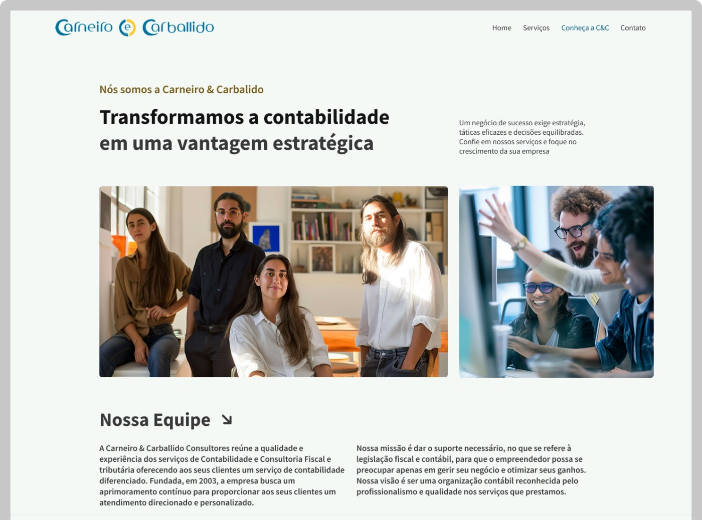
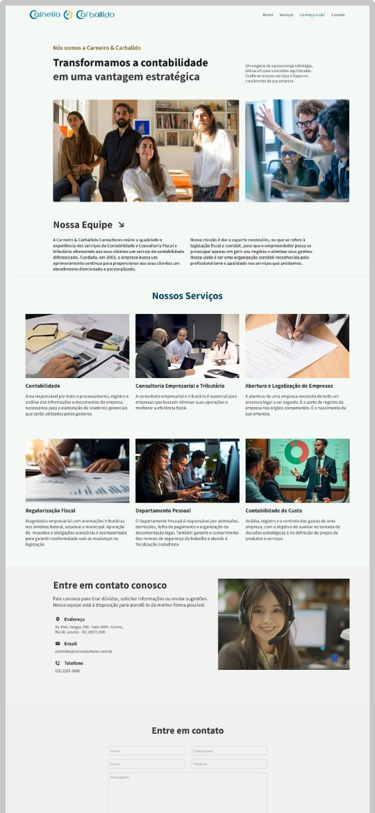
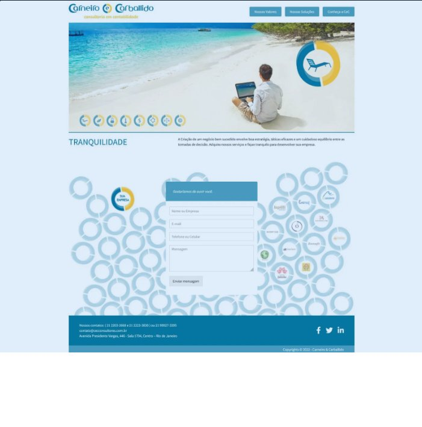
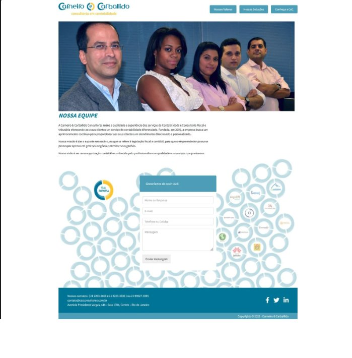
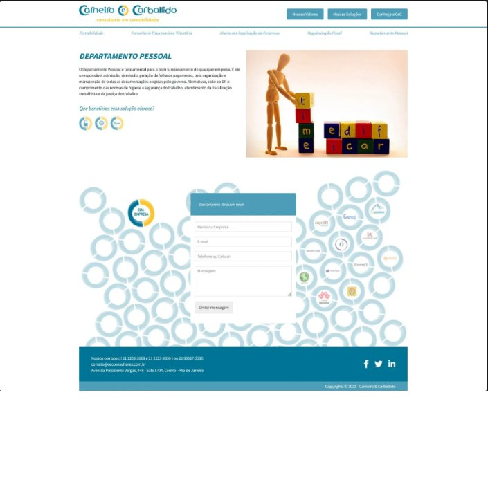
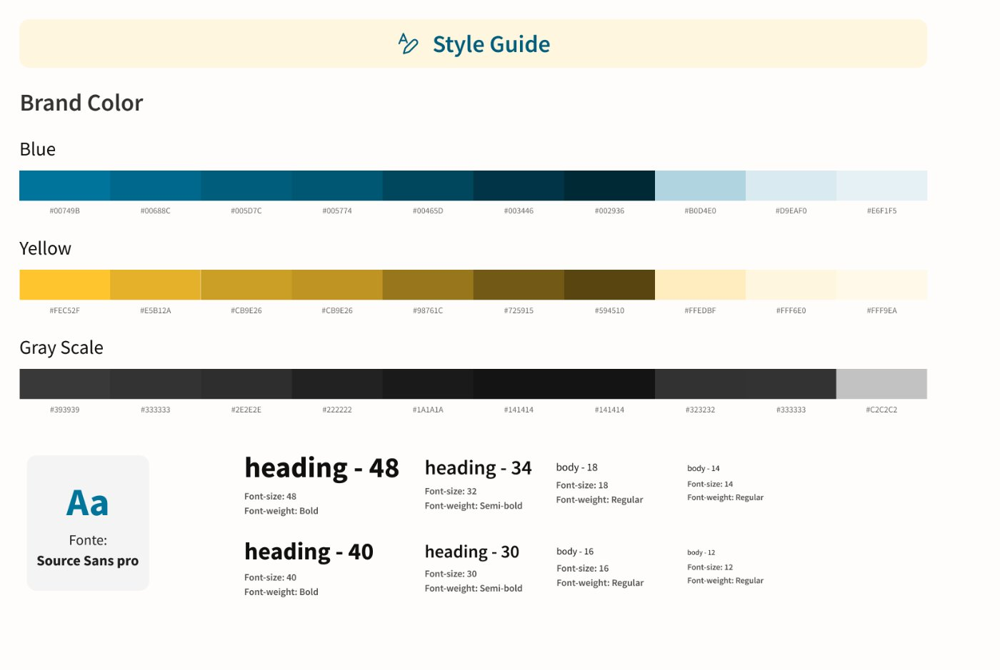
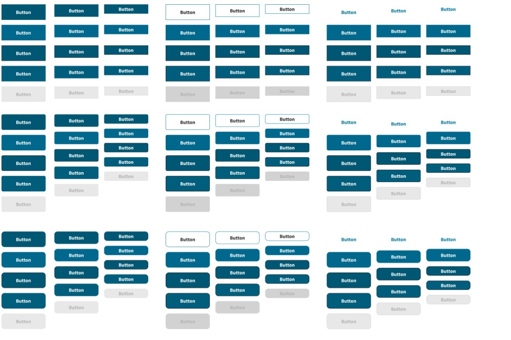
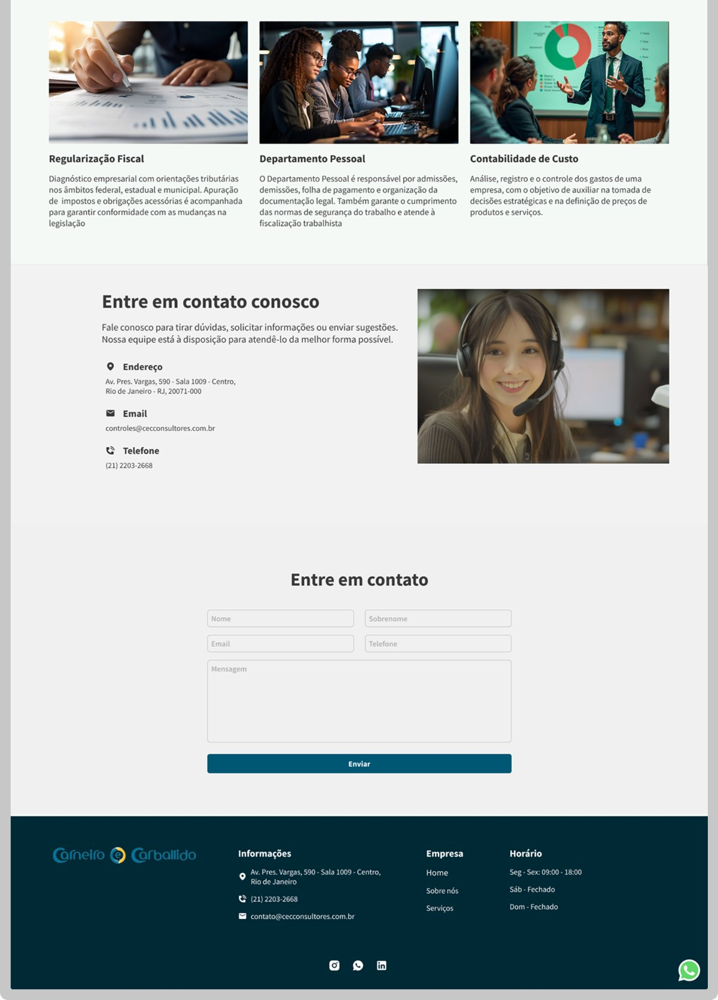
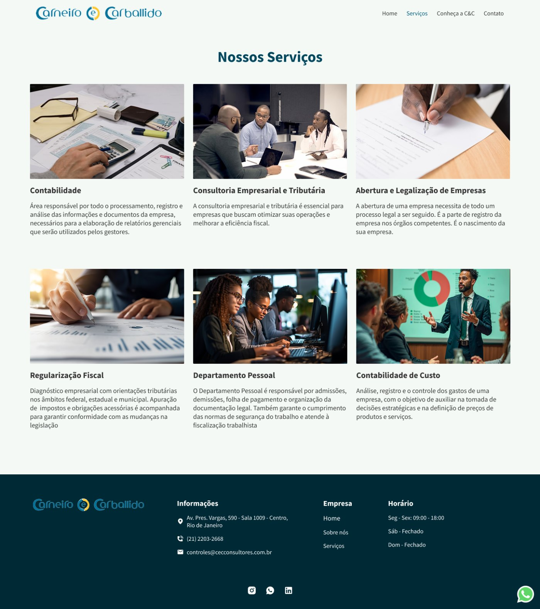

Redesign de interface para uma consultoria contábil que precisava de credibilidade à altura do negócio.
Ano2024
TipoRedesign de interface
ClienteC&C Consultores
FerramentasFigma
PapelUI Designer
cecconsultores.com.br


02Contexto
Modernizar sem perder a seriedade do nome.
A Carneiro & Carballido é uma empresa de contabilidade que buscava modernizar sua presença digital.
O site anterior estava desatualizado visualmente e não refletia o novo posicionamento da empresa no mercado de contabilidade digital.
Além disso, havia o objetivo de transformar o site em uma ferramenta mais estratégica para atrair novos clientes.
03Meu papel
UI Designer, com diretrizes do cliente.
Atuei como UI Designer responsável pelo redesign completo da interface do site.
Embora não tenha participado diretamente do processo de UX, trabalhei com base em diretrizes estratégicas fornecidas pelo cliente e informações sobre os objetivos do novo site.
04Desafios
Três frentes para resolver.
Criar uma interface responsiva e moderna, alinhada com a conversão.
Modernizar um site visualmente ultrapassado sem perder a identidade séria do nome.
Organizar as informações de forma clara e coerente.
05Soluções de interface
Quatro decisões guiaram o redesign.
Paleta sóbria e moderna, transmitindo confiança e profissionalismo.
Tipografia clara e hierarquizada, definida para facilitar a leitura e navegação.
Componentes visuais limpos e design modular para facilitar futuras evoluções.
Layouts com foco em conversão, destacando CTAs estratégicos e formulário de contato.
O ponto de partida. Um site fora do tempo.
[06] Design anterior
home

equipe

dep. pessoal

Uma paleta que já era da marca. Só faltava aplicar com coerência.
[07] Sistema de cores
style guide — Carneiro & Carballido

7.1Princípios da paleta
Coerência antes de ornamento.
As cores já fazem parte da identidade visual da empresa. O foco foi aplicá-las com coerência na interface, garantindo:
Contraste e usabilidade — leitura fácil em qualquer contexto.
Harmonia visual entre seções e blocos de conteúdo.
Consistência em botões, títulos e elementos interativos.
Estados explícitos. Hierarquia clara.
[08] Sistema de botões
/design-system/buttons

8.1Princípios dos botões
Cada ação no lugar certo.
Primário — ação principal, fundo azul sólido.
Secundário — contorno azul, ideal para ações de apoio.
Hover, ativo e desabilitado — variações claras para feedback visual em qualquer contexto.
O design em movimento.
[09] Demo de navegação
cecconsultores.com.br/home
Serviços, contato e formulário. A parte que converte.
[10] Página completa
cecconsultores.com.br/#servicos

Seis serviços. Cada um com seu próprio destaque.
[11] Página de serviços
cecconsultores.com.br/servicos

12Impacto esperado
O que muda para a marca.
Com o novo design, buscamos uma experiência mais fluida, intuitiva e confiável.
Garantir uma navegação fluida em qualquer dispositivo.
Aumentar a taxa de conversão por meio de CTAs estratégicos.
Aumentar o engajamento dos clientes com a página visitada.